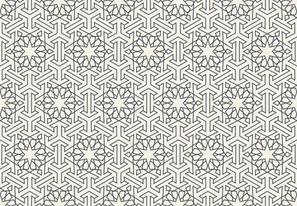
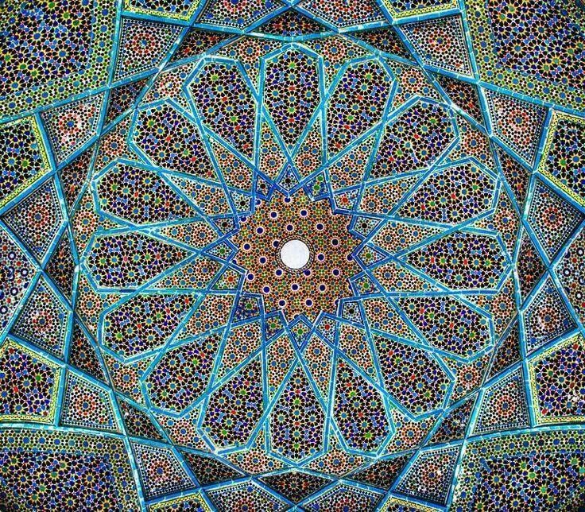
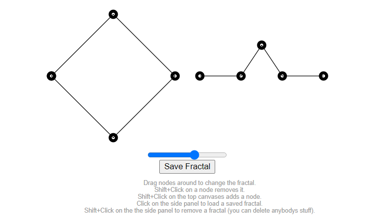
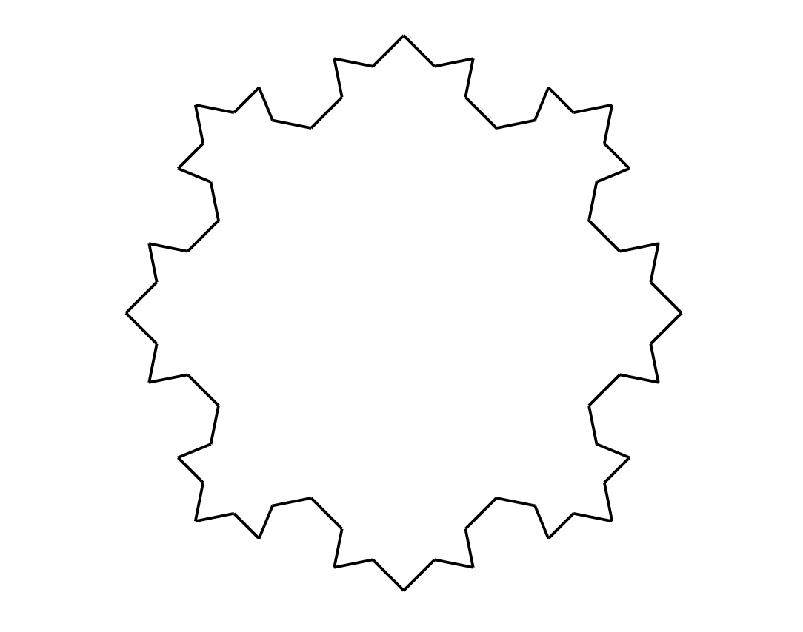

My creative project will consist of creating Islamic geometric art using CSS and React. My blogs and website revolve around decoloniality and social activism through the internet and net art. Creating net-art based on Islamic geometric art will highlight this artform giving the spotlight to Islamic culture and art. This fits into my website because it will be showcasing art from a religion and culture that is often demonised using the space to create positivity and appreciation instead.
The user will be able to choose from a selection of countries and customise two or three colours and once they press generate, the page will fill with geometric art from the region they chose, using the colours they chose. This will allow for the user to participate in the creation process and generating their interest and keeping the user engaged. This project will also be able to highlight different art styles and the differences in the geometric art from country to country.
The technical challenge with this project is generating different patterns. Being a beginner to react will have its challenges and I may not be able to generate multiple different patterns. I might only be able to generate one and will have to work on perfecting it, instead of having multiple choices for the user to choose from. Therefore, the user’s options might be limited to them choosing the colours only. The patterns I create will also have to be a lot simpler than in the examples above as I do not think a pattern of that intricacy will be possible due to time constraints. The project might also be difficult to make responsive and it is a technical challenge I will try and address as the project progresses.
Each pattern will be made up of two or three different colours that the user can choose from. The colours will be from a pre-established pallet that I create. I will have to consider colour-blindness in my curation of different pallets for the player to choose from to ensure the art is visible to the widest range of people.
Here are the examples of Islamic geometric art:


Some of my inspiration for creating a pattern-based artwork is work like this :


This is a fractal editor called fractalizeru developed by Remy Younes. It allows the user to change create their own fractal by editing the nodes of the shapes. Younes uses react to create this project.